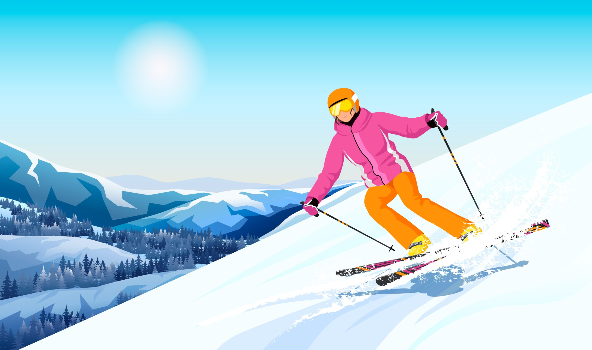
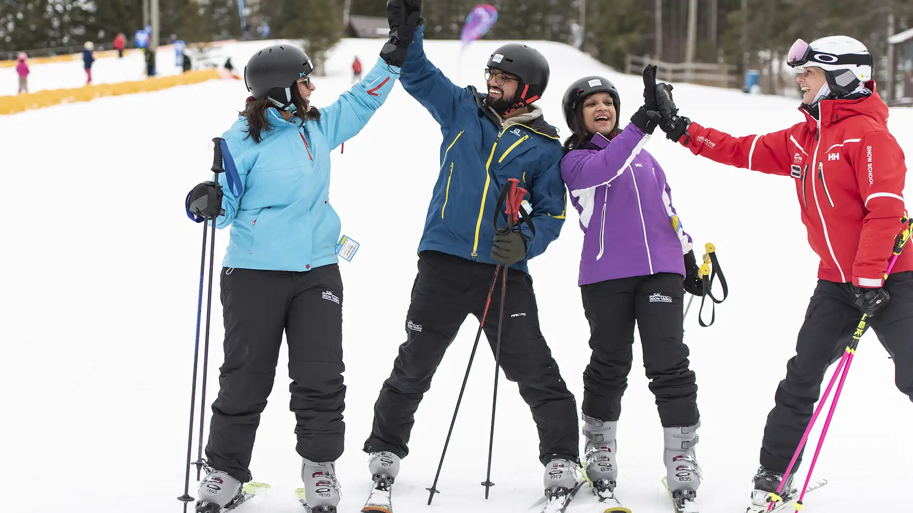
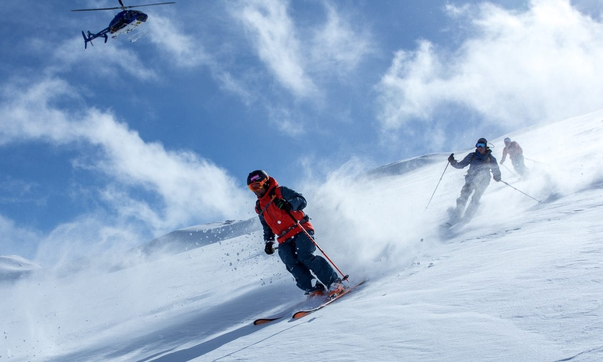
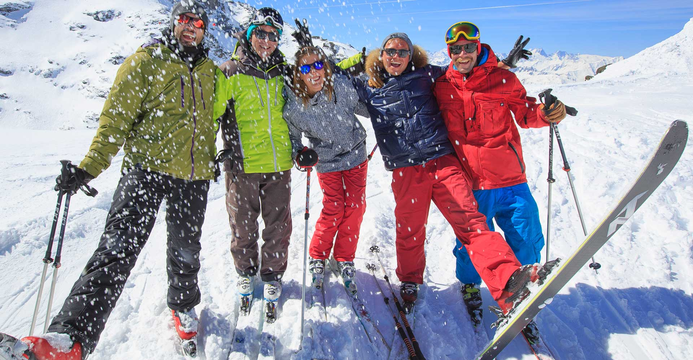
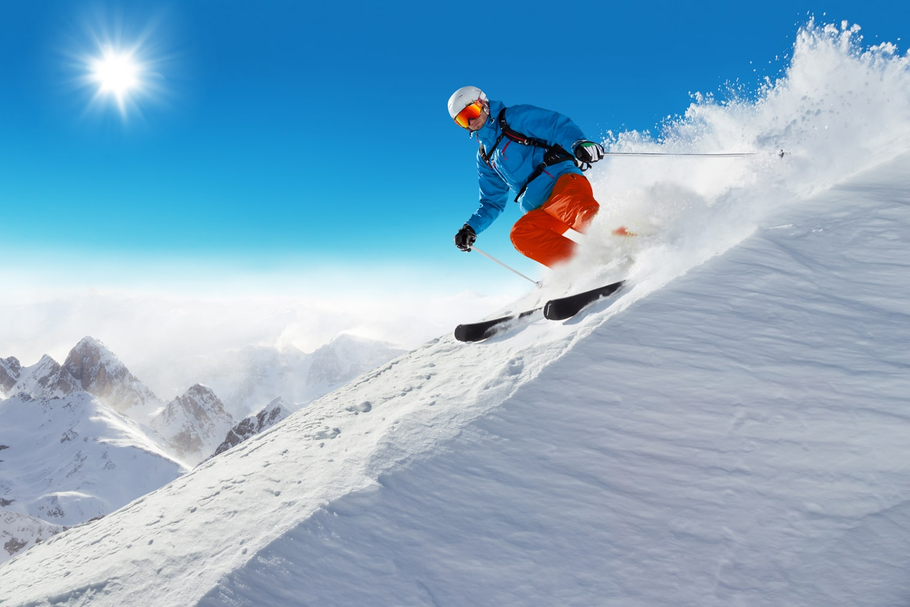
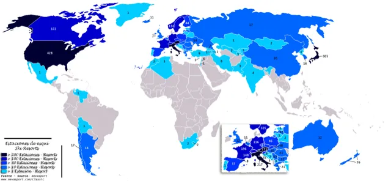
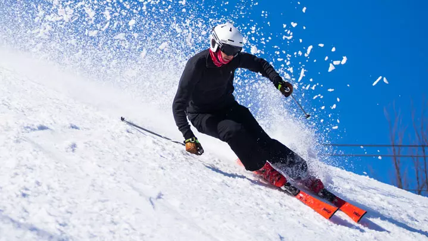
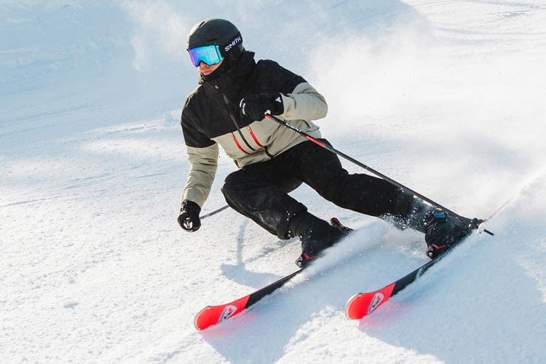

Origine du Ski
Le ski, tel que nous le connaissons aujourd'hui, a des origines anciennes qui remontent à plusieurs millénaires. Les premières traces de skis ont été découvertes en Russie et datent de plus de 6 000 ans. Ces premiers skis étaient utilisés principalement pour se déplacer dans les régions enneigées pendant l'hiver. Les peuples scandinaves et sibériens ont également une longue tradition de ski, utilisant ces outils pour la chasse et le transport.






Petite histoire sur le ski
Le ski, tel que nous le connaissons aujourd'hui, a des origines anciennes qui remontent à plusieurs millénaires. Les premières traces de skis ont été découvertes en Russie et datent de plus de 6 000 ans. Ces premiers skis étaient utilisés principalement pour se déplacer dans les régions enneigées pendant l'hiver. Les peuples scandinaves et sibériens ont également une longue tradition de ski, utilisant ces outils pour la chasse et le transport. C'est au XIXe siècle que le ski a commencé à évoluer en tant que sport de loisirs et de compétition. Les pionniers du ski moderne, tels que Sondre Norheim en Norvège, ont développé des techniques et des équipements qui ont permis de transformer cette pratique utilitaire en un sport dynamique et passionnant. Aujourd'hui, le ski est pratiqué dans le monde entier et englobe diverses disciplines, des courses alpines rapides aux descentes extrêmes en freeride.
Québec est une ville située sur le fleuve Saint-Laurent, dans la province canadienne essentiellement francophone de Québec. Fondée en 1608, elle comprend un centre colonial fortifié, le Vieux-Québec et la place Royale, avec des bâtiments en pierre et des rues étroites. Ce quartier abrite également l'hôtel Château Frontenac et l'imposante Citadelle de Québec. Les rues pavées du Petit-Champlain sont bordées de bistrots et de boutiques. Le ski fait partie intégrante de l'activité des habitants et des touristes pendant toute la période hivernale.
Quelques images

